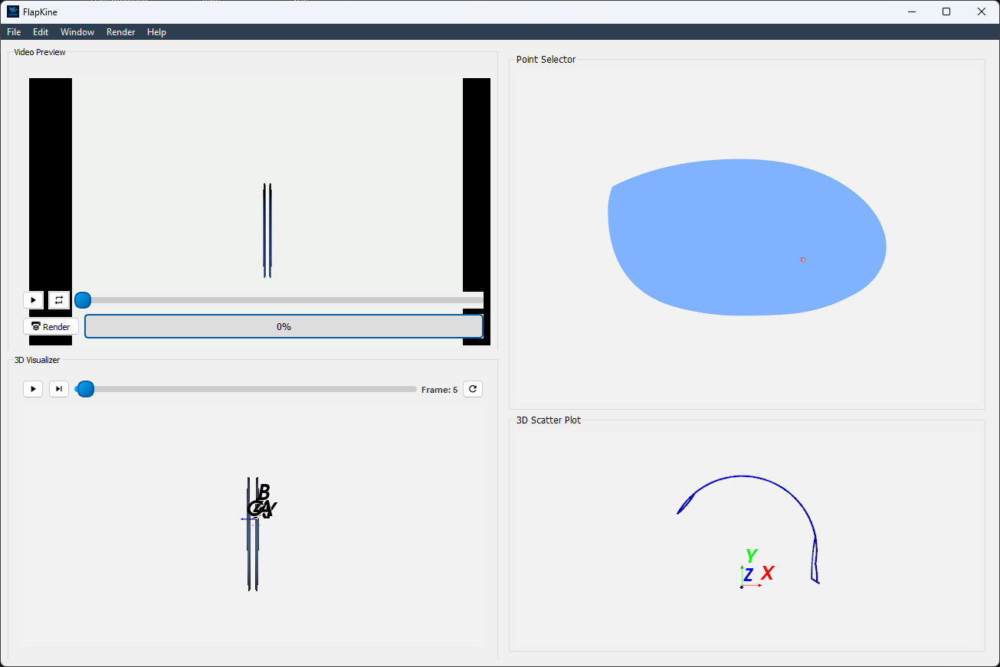
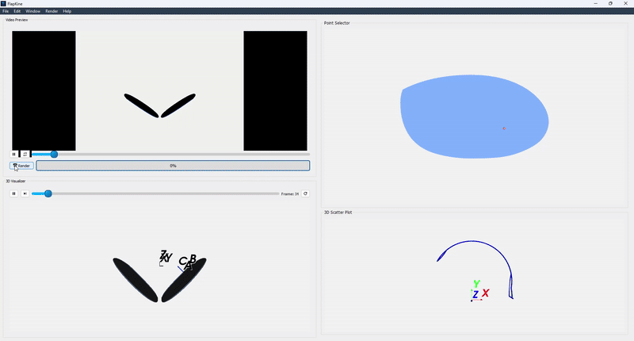
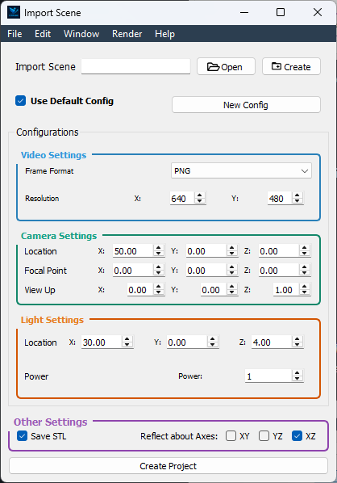
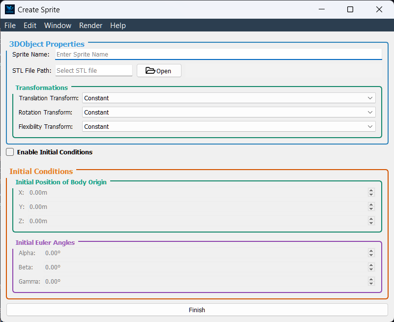

2-DOF + Translating Flapping Wing#
Taking a step beyond the previous 1-DOF flapping wing system, this example introduces a 2-DOF rotational mechanism combined with a linear translation—resulting in a 5-DOF system (2 rotational + 3 translational). The goal is to demonstrate how more complex kinematics can be visualized using FlapKine.
Note
We highly recommend reviewing the simpler example first: 1-DOF Flapping Wing before attempting this walkthrough.
Overview#
This example simulates a wing structure undergoing:
Rotation about two orthogonal axes (z and x)
Translation along a linear axes (x, y and z)
The wing’s kinematic data is driven by external CSV files containing time-dependent joint values. The mesh is loaded via STL, and the full 3D motion is rendered using FlapKine’s rendering pipeline.
Files Included#
`project.zip`: A compressed archive containing both the full simulation project and the necessary resource files.
Upon extraction, the contents of project.zip are organized into two main folders:
`2_DOF_Translation/`: Contains the actual project setup, which can be loaded into FlapKine.
`Resource/`: Contains supporting files required for Reproducing the project from scratch, such as STL meshes, joint angle data, and plots.
Project Folder Structure#
The 2_DOF_Translation/ folder includes the following:
2_DOF_Translation/
├── scene.pkl # Scene Class object saved as a pickle file
├── config.json # Configuration file with simulation and rendering settings
└── data/ # Output directory for generated frames or videos
Resource Files#
The Resource/ folder contains the required data for kinematic input and visualization:
Resource/
├── angles/
│ ├── alpha_data.csv # Rotation about the x-axis (time series values)
│ ├── beta_data.csv # Rotation about the y-axis (all zeros)
│ └── gamma_data.csv # Rotation about the z-axis (time-series values)
├── origin_position/
│ └── pos_data.csv # Position of Body Origin (time-series values)
├── stl/
│ └── wing.stl # 3D mesh of the wing
├── angle_plot.png # Plot of the rotation angles over time
└── pos_plot.png # Plot of the body origin position over time
Initial STL Orientation#
The wing.stl model is oriented such that:
The x-axis aligns with the wing span (length).
The y-axis aligns with the wing chord (width).
The z-axis corresponds to the wing thickness.
Simulation Details#
This example demonstrates a two rotational degree of freedom system, where rotation about the z-axis and x-axis is active. The time-dependent rotation is defined by the file gamma_data.csv and alpha_data.csv, while the other rotational axis beta (y-axis)—remain zero throughout the simulation, which is specified by all zero beta_data.csv.
The corresponding plots below illustrate the time-series data used in the simulation:

Figure: Time-series plot of the rotation angles (alpha, beta, and gamma). Only gamma (z-axis) and alpha (x-axis) varies, while beta remain zero.#
In addition to rotational motion, this example includes translational motion of the body frame origin, resulting in additional three translation degree of freedom. The position trajectories along the X, Y, and Z axes are provided as time-series data in the origin_position/ folder.

Figure: Time-series plot of the translational positions (X, Y, and Z) of the body frame origin during the simulation.#
Running the Example#
Extract the project.zip archive to your desired directory.
Launch the FlapKine application and select Load Project.
Navigate to the 2_DOF_Translation/ folder and choose the directory.
The project will load with a pre-configured scene. Below is a screenshot of the loaded project:
{kind=link}

Figure: Screenshot of the project loaded in FlapKine.#
The project folder does not include the rendered video by default. To generate it, click on the Render button in the GUI. The simulation will be rendered and the output video saved under data/videos/.
Note
See the Project Editor Window section for more details about the GUI and its functionality.
Below is a short preview showcasing the rendered simulation output for this example:
{kind=link}

Figure: Rendered simulation preview after completing the scene setup and clicking the Render button in FlapKine.#
For higher quality or longer playback, you can render a full-resolution .mp4 video directly using the Render button. The video will be saved automatically in the data/videos/ folder within your project directory.
Reproducing from Scratch#
To manually recreate the above project from scratch:
Open FlapKine and select New Project.
Choose your desired destination folder, enter a project name, and click Save.
The Project Creator Window will open. This is where you can import
Sceneand change rendering configurations.
Figure: Screenshot of the project creator window in FlapKine.#
Start by loading the default rendering configuration:
Toggle the Use Default Config option.
For this simulation, the optimal camera and lighting setup is:
Camera Position: (50, 0, 0)
Focal Point: (0, 0, 0)
Up Vector: (0, 0, 1)
Light Source Position: (30, 0, 0)
Light Energy: 1
Enable Reflect about the XZ plane.
(This reflection simulates a symmetrical, bird-like flapping motion. Alternatively, you can add multiple sprites—one for each wing—and animate them independently for finer control.)

Figure: Rendering configuration settings in FlapKine.#
To add a model to the scene, click the Create button under the Import Scene section. This opens the Scene Creator Window.

Figure: Scene creator window in FlapKine.#
Click Add to insert a new
Sprite.In the Sprite 1 section, click Create. This opens the Sprite Creator Window.
In the Sprite Creator:
Assign a name to your
3DObject.Load the STL file from the resource/stl directory.

Figure: STL file loaded and Transformation set in the sprite configuration.#
In the Transformation section:
Set the Translation Tranfrom Type to Linear
For position, load pos_data.csv from resource/origin_position directory
Set the Rotation Transform Type to Euler_angles
Set the Order to ZYX
For Angle 1, load gamma_data.csv, for Angle 2 load beta_data.csv and for Angle 3 load alpha_data.csv from the resource folder
Once configuration is complete, click Finish. You’ll return to the Scene Creator Window where the new sprite will appear in green, indicating success.
Click Import Scene to finalize the scene. You’ll be redirected back to the Project Creator Window, with the Create Scene button now showing green.
Finally, click the Create Project button. This will generate the same project structure and configuration as in the original 2_DOF_Translation/ folder provided in project.zip.
{kind=link}
{kind=link}
Download
Get the resource from: Download Link